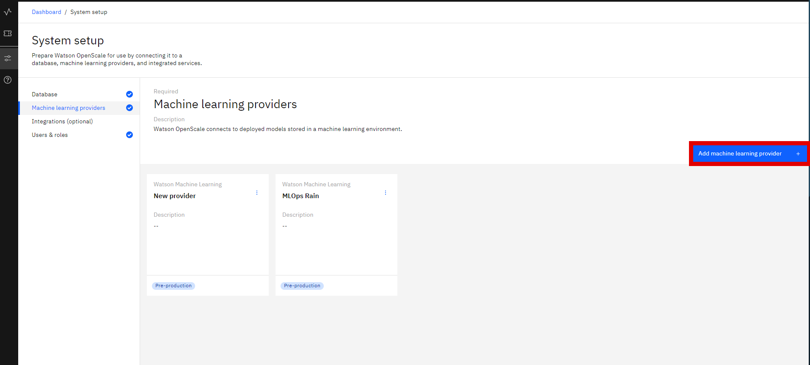
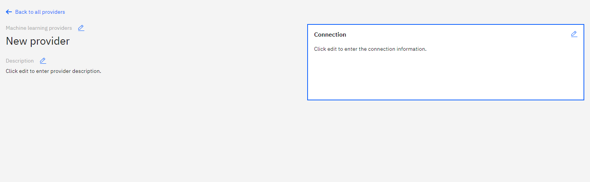
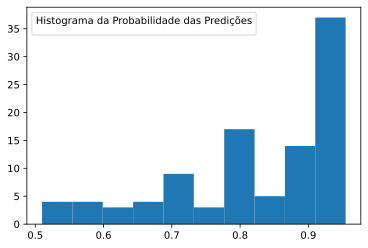

Monitoring with IBM OpenScale
Setting Up the Environment
-
Creating OpenScale service from the Services Catalog

-
Creating Machine Learning Provider
On the Machine Learning Provider Tab, click on the
Add machine learning providerbutton.2.1 Add a name and description.
2.2 Add connections and Select Deployment Space Under
Service Provider, selectWatson Machine Learning (V2)from the dropdown. Next select the deployment space your model is located in.
-
Adding to Dashboard 3.1 On the
Insights Dashboard, click on theAdd to dashboardbutton.3.2 Next select the provider you just created, then select your model deployment and click on
Configureand thenConfigure Monitors.
3.3 Select the data and algorithm types, in our example it is a Binary Classification.
3.4 The next step is selecting the training data that can be stored on a Db2 database or in IBM's Cloud Object Storage.

3.5 Now select the Label column (column you want to predict).
3.6 Next we select all the features we want to include as well as indicate which ones are categorical.

3.7 Here we can select Automatic Logging.
3.8 Finally, we can select
predictionandprobabilityfor the model output. -
Configuring Monitors We can create monitors for
Fairness,Quality.DriftandExplainability.4.1 Fairness: The monitor checks your deployments for biases. It tracks when the model shows a tendency to provide a favorable (preferable) outcome more often for one group over another.
We have to specify which values represent favorable outcomes and then select the features to monitor for bias, in our case we chose to monitor extreme temperatures in the
MinTempandMaxTempcolumns.
4.2 Quality: This monitor evaluates how well the model predicts accurate outcomes that match labeled data. It identifies when model quality declines, so we can retrain your model if needed.
We can set the Quality Threshold value, which Area under ROC, at 0.8.
4.3 Drift: The drift evaluation measures drop in accuracy by estimating the drop in accuracy from a base accuracy score determined by the training data and also drops in data consistency, by estimating the drop in data consistency by comparing recent model transactions to the training data.
We can set the Drift threshold as 20%.
4.4 Explainability: This allows us to reveal which features contributed to the model’s predicted outcome for a transaction and suggests what changes would result in a different outcome.
We can set all features as controllable.
Logging
In the Transactions page, we can see informations about transactions, including a Timestamp, Prediction and Confidence.

We can also access and generate Logs via the Python API
-
First we need to initialize the Watson Machine Learning and OpenScale clients as well as the IAMAuthenticator.
service_credentials = { "apikey": credentials["apikey"], "url": "https://api.aiopenscale.cloud.ibm.com", } DEPLOYMENT_UID = metadata["deployment_uid"] MODEL_UID = metadata["model_uid"] MODEL_NAME = metadata["project_name"] + "_" + metadata["project_version"] SPACE_ID = credentials["space_id"] WOS_GUID = get_instance_guid(api_key=service_credentials["apikey"]) WOS_CREDENTIALS = { "instance_guid": WOS_GUID, "apikey": service_credentials["apikey"], "url": "https://api.aiopenscale.cloud.ibm.com", } if WOS_GUID is None: print("Watson OpenScale GUID NOT FOUND") else: print(WOS_GUID) wml_credentials = {"url": credentials["url"], "apikey": credentials["apikey"]} wml_client = ibm_watson_machine_learning.APIClient(wml_credentials) wml_credentials = { "url": credentials["url"], "apikey": credentials["apikey"], "instance_id": "wml_local", } wml_client.set.default_space(SPACE_ID) authenticator = IAMAuthenticator(apikey=credentials["apikey"]) wos_client = ibm_watson_openscale.APIClient( authenticator=authenticator, service_url="https://api.aiopenscale.cloud.ibm.com") -
Then we can get the model's scoring endpoint.
for deployment in wml_client.deployments.get_details()['resources']: if DEPLOYMENT_UID in deployment['metadata']['id']: scoring_endpoint = deployment['entity']['status']['online_url']['url'] print(scoring_endpoint) https://us-south.ml.cloud.ibm.com/ml/v4/deployments/e02e481d-4e56-470f-baa9-ae84a583c0a8/predictions -
Here we display the OpenScale subscriptions.
wos_client.subscriptions.show() -
Now we can load a dataset and then create the request body to make the predictions.
df_data = pd.read_csv("../data/weatherAUS_processed.csv") X = df_data.iloc[:, :-1] y = df_data[df_data.columns[-1]] X_train, X_test, y_train, y_test = train_test_split( X, y, test_size=0.01, random_state=1337 ) payload_scoring = { "input_data": [ { "fields": X.columns.to_numpy().tolist(), "values": X_test.to_numpy().tolist(), } ] } -
Then we send the request to our model.
scoring_response = wml_client.deployments.score(DEPLOYMENT_UID, payload_scoring) -
After that, we use the
subscription_idwe got from step 3. we get the Payload data set ID.subscription_id = 'bb7a45c3-15ad-4932-aeb8-8d32d54b8b05' payload_data_set_id = wos_client.data_sets.list(type=DataSetTypes.PAYLOAD_LOGGING, target_target_id=subscription_id, target_target_type=TargetTypes.SUBSCRIPTION).result.data_sets[0].metadata.id print("Payload data set id:", payload_data_set_id) Payload data set id: f4791725-24f8-4a00-9c13-b331ebca47f6 -
Now we can manually create logs with the predictions from our model and the data we sent in the request.
records = [PayloadRecord(request=payload_scoring, response=scoring_response, response_time=72)] store_record_info = wos_client.data_sets.store_records(payload_data_set_id, records) -
We also can do the same thing for
Feedbackdatasets, which don't require the model prediction.feedback_dataset = wos_client.data_sets.list(type=DataSetTypes.FEEDBACK, target_target_id=subscription_id, target_target_type=TargetTypes.SUBSCRIPTION).result feedback_dataset_id = feedback_dataset.data_sets[0].metadata.id if feedback_dataset_id is None: print("Feedback data set not found. Please check quality monitor status.") sys.exit(1) data = X_test.to_dict('records') wos_client.data_sets.store_records( feedback_dataset_id, request_body=data, background_mode=False, header=True, delimiter=',', csv_max_line_length=1000) print(wos_client.data_sets.get_records_count(data_set_id=feedback_dataset_id)) -
After that we can access these datasets as Pandas dataframes.
records2 = wos_client.data_sets.get_list_of_records(data_set_id=payload_data_set_id,output_type=ResponseTypes.PANDAS) df = records2.result -
Then we can use that Pandas dataframe to create plots or other forms of analysis.
import matplotlib.pyplot as plt plt.hist(df.prediction_probability) plt.legend(title='Predictions Probability Histogram') plt.show()
Evaluating Model
On the main Insights Dashboard when click on our deployment, we can evaluate or model by clicking on the Actions button on the top-right and then Evaluate now in dropdown, where we can import a test dataset by either directly uploading a .csv file or by using dataset or database stored in the IBM COS.
After that, the metrics we defined for the monitors will be used to generate reports depicting our model's performance.

Explaining Predictions
Again, in the Transactions page, we can click on the Explain button, in the following page we can observe each features' relative weight indicating how strongly they influenced the model’s predicted outcome.
{kind=link}
In the Inspect tab, there is a table displaying the values each feature would have to have to alter the prediction result, here we can also change the values by hand to see what the outcome would be.